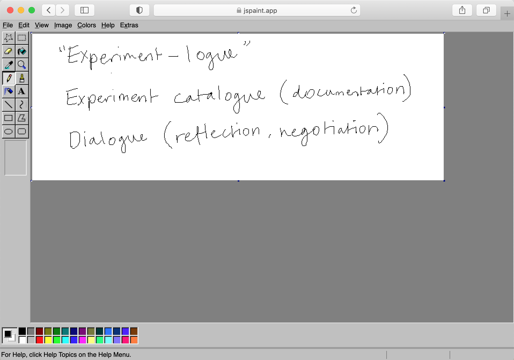

What is an "Experiment-logue"?
It is an archive of design experiments and projects from my honours year. The name experiment-logue came from Donald Schön's theory of the designer as a reflective practitioner who converses with a 'situation', in order to make sense of complex ideas and problems.
Cataloging these projects and documenting their processes was a core part of my research, because through observing and reflecting upon the different stages of making (before, during and after), I identified recurring themes and motifs in my work.
Through these experiments I explored the idea of the design process as a conversational process, in that the works produced are the result of multiple "voices" coming together. The ideas for these experiments form through the meeting of things I read or see and people that I talk with, even how I might be feeling in a particular moment.
